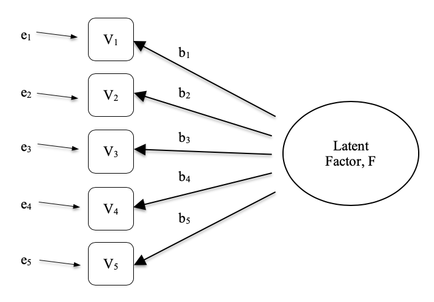
15 因素分析
譯者註 20240108初步以Claude-2.1完成翻譯，內容待編修。
前幾章涵蓋了不同兩個或多個組之間的統計檢定。但是,有時在進行研究時,我們可能希望檢查多個變項如何共變。也就是說,它們彼此之間的關係以及這些關聯性的模式是否顯示出有趣和有意義的東西。例如,我們經常有興趣探索是否存在任何潛在的未觀察到的潛在因素,這些因素是通過我們資料集中直接測量的可觀察變項表示的。在統計學中,潛在因素最初是隱藏變項,不是直接觀察的,而是通過從其他觀察到的(直接測量的)變項推斷出來的。
在本章中,我們將考慮不同的因素分析和相關技術,首先是探索性因素分析 (EFA)。EFA是一種統計技術,用于識別資料集中的潛在潛在因素。然後,我們將介紹主成分分析,它是一種資料的縮減方式,嚴格來說,它並沒有識別潛在的潛在因素。相反,PCA僅僅產生觀察變項的線性組合。在這之後,驗證性因素分析部分表明,與EFA不同,使用CFA,您從一個想法開始——一個模型——關於您的資料中的變項彼此之間的關係。然後,您根據觀察到的資料檢驗您的模型,並評估模型的適配程度。 CFA的一個更複雜的版本是所謂的多種特質多項相關驗證性因素分析方法,其中包含了模型中的潛在因素和方法方差。當使用不同的方法學方法進行測量並且方法方差是一個重要的考慮因素時,這很有用。最後,我們將介紹一項相關分析:內部一致性信度分析測試一種量表衡量心理結構的一致性。
15.1 探索性因素分析
探索性因素分析(EFA) 是一種統計技術,用于發現可以從我們的觀察數據中推斷出的任何隱藏的潛在因素。這種技術計算一組測量變量(例如\(V1、V2、V3、V4\) 和 \(V5\))在多大程度上可以表示為對潛在潛在因素的測量。這種潛在因素不能通過只有一個觀察變量來測量,而是體現在它導致的一組觀察變量中的關係中。
在 圖 15.1 中,每个觀察變量 \(V\) 在一定程度上是由潛在因素(\(F\))“導致的”,這是係數 \(b\_1\) 到 \(b\_5\)(也稱為因子負荷)表示。 每个觀察變量也有一個相關的錯誤項,e1 到 e5。 每個錯誤項是与之相關的觀察變量 \(V\_i\) 中无法用潛在因素来解釋的方差。
在心理學中,潛在因素表示難以直接觀察或測量的心理現象或構造。 例如,個性,智力或思維方式。 在 圖 15.1 的示例中,我們可能已經就他們的行為或態度向人們提出了五個具體問題,并且從中我們能夠瞭解一種名為外向性的個性構造。 一組不同的具體問題可能會給我們提供有關個人內向性或盡責性的信息。
這裡有另一個示例:我們可能無法直接測量統計焦慮,但是我們可以通過一系列問卷中的問題測量統計焦慮是否高或低。例如,“\(Q1\):完成統計課程中的作業”,“\(Q2\):試圖理解期刊文章中描述的統計”,和“\(Q3\):向講師請教課程中不理解之處的幫助”等等,每个從低焦慮到高焦慮評分。 因為他們的高統計焦慮,統計焦慮较高的人往往會給出类似的高回應。 同樣,由于他們的統計焦慮較低,統計焦慮較低的人會給出這些變量的类似低回應。
在探索性因素分析(EFA)中,我們本質上是探索變量之間的相關以發現變量之間的共變所識別的任何有趣和重要的潛在(潛在)因素。 我們可以使用統計軟件來估計任何潛在因素,並確定在每个因素上具有較高載荷1(例如載荷> 0.5)的變量,這表明它們是潛在因素的一个有用測量或指標。 這個過程的一部分包括一個名為旋轉的步驟,老實說這是一个相當奇怪的想法,但由于我們不必擔心理解它,這很方便; 我們只需要知道它很有用,因為它使得不同因素上的載荷模式清晰得多。 因此,旋轉有助于更清楚地看到哪些變量在實質上與每个因素相聯繫。 我們還需要決定根據數據我們需要多少因素是合理的,這方面幫助我們的東西就是所謂的特徵值。 我們稍後会回到這一點,在我们介紹了一些 EFA 的主要假設之後。
15.1.1 探索性因素分析的執行條件
需要在分析的一部分中檢查一些預設條件。第一個預設條件是球形性,它基本上是檢查您的數據集中的變量之間是否相關,以至於可以用更少的因素來概括。巴特利球形性檢驗是用于檢驗觀測相關矩陣是否與零(或空)相關矩陣顯著不同。所以,如果巴特利檢驗顯著(\(p < .05\)),這表明觀測相關矩陣顯著不同於空矩陣,因此適合 EFA。
第二個預設條件是抽樣適度性,並通過KMO抽樣適度性測度(KMO)進行檢查。 KMO 指數是觀察變量之間可能是公共變異的變異數的測量值。 通過偏相關檢查只載入兩個項目的因素。 我們很少(如果不是從未)希望 EFA 產生大量只載入兩個項目的因素。 KMO 與抽樣適度性有關,因為偏相關通常見於樣本不足。 如果 KMO 指數較高($ \(),則 EFA 是有效的;如果 KMO 較低(\) $),則 EFA 是不相關的。 KMO 值小於 \(0.5\) 表示 EFA 不適用,KMO 值為 \(0.6\) 時才考慮 EFA 適用。 \(0.5\) 和 \(0.7\) 之間的值被認為是適中的,\(0.7\) 和 \(0.9\) 之間的值是好的,\(0.9\) 和 \(1.0\) 之間的值是極好的。
15.1.2 探索性因素分析的用途
如果 EFA 提供了好的解決方案(即因素模型),那麼我們需要決定對嶄新的因素要做什麼。研究人員經常在心理測量量表開發期間使用 EFA。 他們將開發與一個或多個心理結構相關的問卷項目池,使用 EFA 檢視哪些項目作為潛在因素“聚在一起”,然後評估是否應刪除某些項目,因為它們沒有有用或清楚地測量其中一個潛在因素。
與這種方法一致,EFA 的另一個後果是將載入不同因素的變量合併為因子得分,有時稱為量表分數。有兩種選擇將變量合併為量表分數的方法:
按每個對因素作出貢獻的項目的因子負荷加權創建新的變量。
基於對因素作出貢獻的每個項目創建一個新的變量,但將它們等權重。
在第一種選擇中,每個項目對合併分數的貢獻取決於它與因素的關係強度。 在第二種選擇中,我們通常只是在所有實質上對一個因素作出貢獻的項目上取平均值來創建合併的量表分數變量。 選擇哪種方法取決於個人喜好,儘管第一種選擇的一個缺點是負荷量在不同樣本之間會有很大不同,而在行為和健康科學領域,我們經常有興趣開發和使用不同研究和不同樣本之間的綜合問卷量表分數。 在這種情況下,使用基於等量貢獻的實質性項目而不是使用來自不同樣本的特定樣本的負荷加權的綜合測量是合理的。 在任何情況下,理解作為項目平均值的合併變量測量都比使用特定樣本的最佳加權組合更簡單、更直觀。
一種更高級的統計技術(超出本書範圍)進行迴歸建模,其中潛在因素用於預測其他潛在因素的模型。 這稱為“結構方程式建模”,並且有專門的軟件程序和 R 程序包專注於這種方法。 但是,讓我們不要操之過急; 我們現在真正應該關注的重點是如何在 jamovi 中進行 EFA。
15.1.3 使用jamovi完成探索性因素分析
首先,我們需要一些資料。國際個性項目庫中的25個人格自我報告項目(見@fig-fig15-2)作為基於網絡的人格評估合成孔徑人格評估(SAPA:http://sapa-project.org)項目的一部分。25個項目由五個假定因素組織:親和力、盡責性、外向性、神經質和開放性。
使用6點響應量表收集了項目數據:
1.非常不準確
2.中度不準確
3.輕度不準確
4.輕度準確
5.中度準確
6.非常準確。
資料檔案_bfi_sample.csv_包含了\(N=250\)的響應樣本。作為研究人員,我們有興趣探索數據,看看是否有一些由_bfi_sample.csv_檔案中的\(25\)個觀察變項合理測量的潛在潛在因素。打開數據集并檢查這\(25\)個變項是否編碼為連續變項(技術上它們是排序的,雖然對於jamovi中的EFA大多數情況並不重要,除非您決定計算加權因子分數,在這種情况下需要連續變項)。在jamovi中執行EFA:
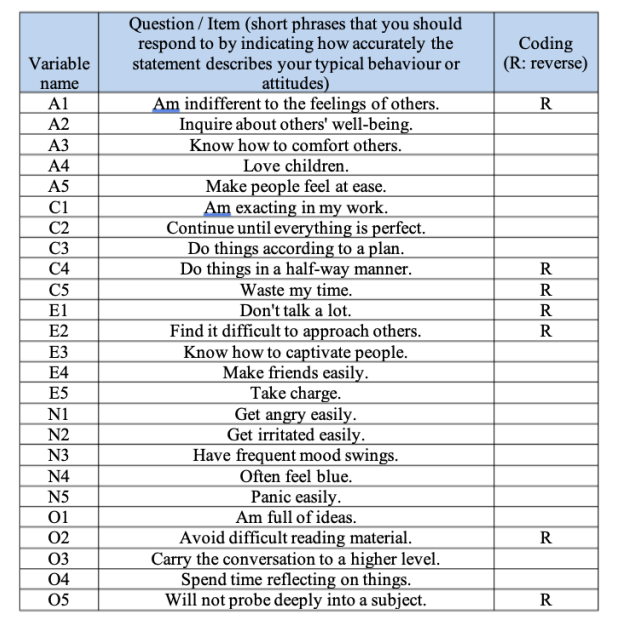
这是“使用jamovi完成探索性因素分析”第二段的原文。生成的繁体中文翻译如下:
從主要jamovi按鈕欄中選擇“因素”- “探索性因素分析”以打開EFA分析窗口(圖 15.3)。
選擇25個人格問題并將其轉移到“變項”框中。
檢查適當的選項,包括“預設檢查”,但也選擇旋轉“方法”、要提取的“因子數量”和“其他輸出”選項。有關此示例EFA的建議選項,請參閱@fig-fig15-3,并請注意,如下所述,通常研究人員會在分析過程中調整旋轉“方法”和提取的“因子數量”以找到最佳結果。
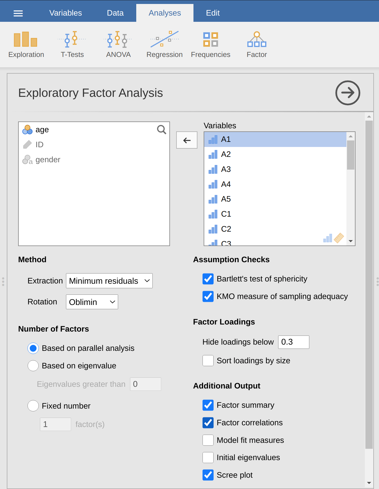
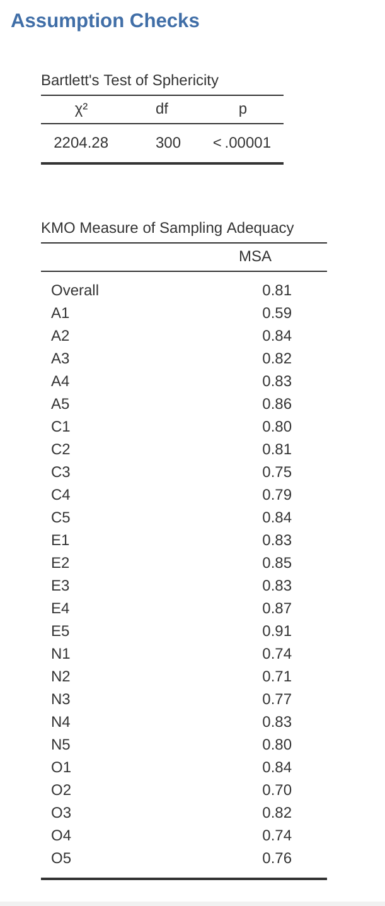
首先,檢查預設條件(圖 15.4)。您可以看到(1)巴特利球形性檢驗顯著,所以滿足這個預設條件;和(2)抽樣適度性測度(MSA)的總體KMO測度為\(0.81\),這表明了很好的抽樣適度性。這裡沒有問題!
下一件要檢查的事情是使用多少因素(或從數據中“提取”多少因素)。有三種不同的方法:
一個公約是選擇所有特徵值大於1的組件2。這會給我們四個因素(嘗試一下)。
如@fig-fig15-5所示,檢查斜率圖可以幫助您識別“拐點”。這是斜率曲線明顯趨於平緩的點,在“肘部”以下。这會给我们的数据五个因素。解釋斜率圖有點藝術性:在@fig-fig15-5中,從\(5\)個到\(6\)個因素有一個明顯的跨度,但是在您查看的其他斜率圖中,情況並不會那么清晰。
使用平行分析技術,獲得的特徵值與從隨機數據獲得的特徵值進行比較。 提取的因素數量是特徵值大於隨機數據中找到的值的數量。
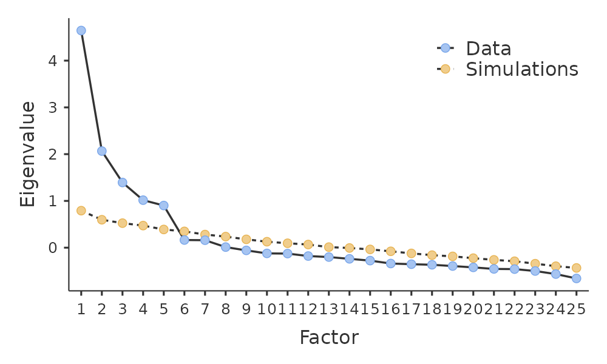
根據 Fabrigar et al. (1999) 的說法,第三種方法很好,儘管在實踐中,研究人員傾向於查看所有三個方法,然后根據最容易或最有幫助解釋的因素數量來進行判斷。這可以理解為“意義標准”,研究人員通常除了檢查上述方法之一的解决方案外,还會檢查具有一個或兩個更多或更少因素的解决方案。 然后他們采用對他們最有意义的解决方案。
與此同時,我們還應考慮最佳旋轉最終解决方案的最佳方法。旋轉有兩種主要方法:正交(例如“varimax”)旋轉強制所選因素不相關,Whereas斜交(例如“oblimin”)旋轉允許所選因素相關。心理學家和行為科學家感興趣的維度通常並非我們希望正交的維度,因此斜交解決方案可以說更加合理2
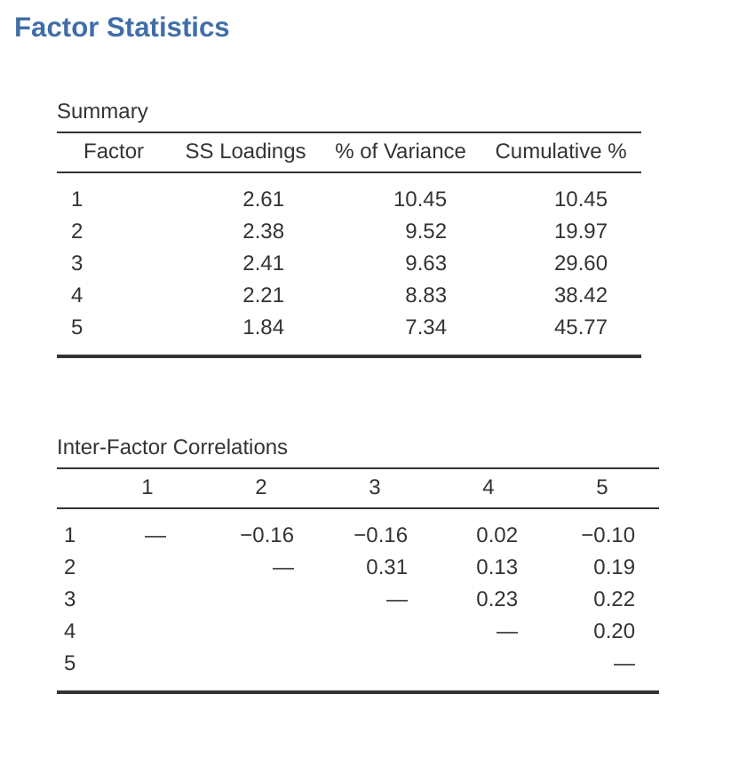
從實踐的角度來看,如果在斜交旋轉中發現因素之間存在顯著相關(正相關或負相關,並且大於0.3),如@fig-fig15-6所示,其中提取的兩個因素之間的相關為0.31,那麼這將證實我們更喜歡斜交旋轉的直覺。如果這些因素確實相關,那麼斜交旋轉將產生比正交旋轉更好的真實因素估計和更好的簡單結構。而且,如果斜交旋轉表明各因素之間的相關接近零,那麼研究人員可以繼續進行正交旋轉(這時應給出與斜交旋轉大致相同的解決方案)。
在檢查提取因素之間的相關時,至少有一個相關大於0.3(圖 15.6),因此更喜歡提取的五個因素的斜交(“oblimin”)旋轉。我們還可以在@fig-fig15-6中看到,五個因素解釋的資料總變異數的比例為46%。第一因素解釋了大約10%的變異,第二至第四因素解釋了大約9%的變異,第五因素解釋了略多於7%的變異。這並不是很好;如果整體解釋我們數據中的更多變異那會更好。
請注意,在每個EFA中,您可以潛在地具有與觀察變項數量相同的因素,但是您包含的每個附加因素都會增加更小量的解釋變異數量。如果前几个因素解释了原始25 个變項中的大量方差,那麼這些因素顯然是25 个變項的一個有用、更简单的替代品。您可以放心刪除其餘部分,而不會失去太多原始變異性。但是如果需要18個因素(例如)來解釋這25個變項中的大部分變異數,那麼您不如直接使用原始的25個變項。
?fig-fig15-7顯示了因子負荷。也就是說,25個不同的人格項目如何在五個選定的因素上加載。我們隱藏了小於0.3的負荷(設置在@fig-fig15-3中顯示的選項中)。
對於因素\(1、2、3\)和\(4\),因子負荷的模式與@fig-fig15-2中指定的假定因素緊密匹配。太好了!第5個因素也相當接近,五個被認為測量“開放性”的觀察變項中有四個在該因素上載入得相當好。但是,變量\(04\)似乎並不太適合,因為@fig-fig15-7中的因子解决方案表明它載入到因素\(4\)上(儘管載荷相對較低),但沒有實質上載入到因素\(5\)上。
需要注意的另一件事情是,在@fig-fig15-2中標記為“R:反向編碼”的那些變量是那些具有負因子負荷的變量。查看項目A1(“漠不關心他人的感受”)和A2(“詢問他人的幸福”)。我們可以看到,\(A1\)的高分表示親和力較低,Whereas \(A2\)(和所有其他“A”變項)的高分表示親和力較高。因此,A1將與其他“A”變項負相關,這就是為什麼它在@fig-fig15-7中具有負因子負荷。
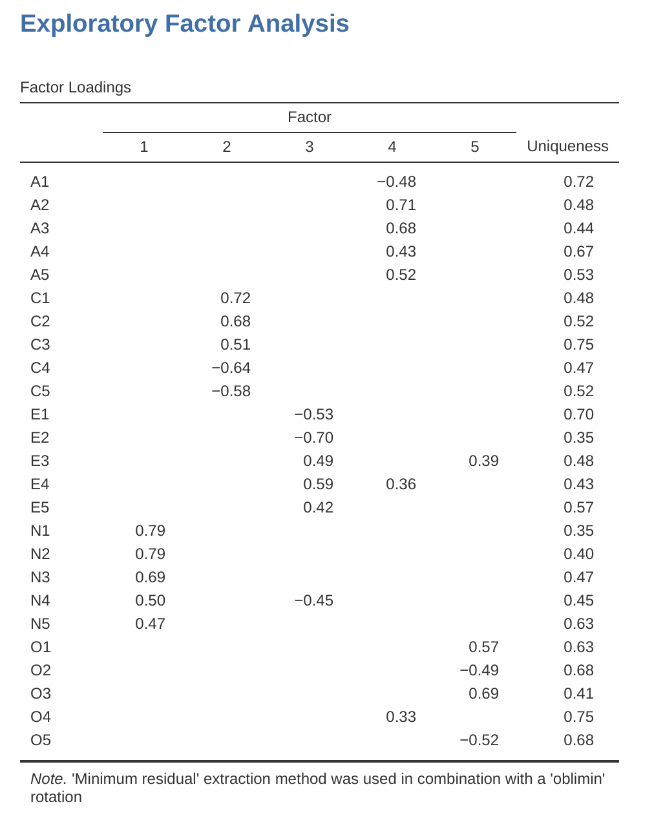
我們也可以在 圖 15.7 中看到每個變項的“獨特性”。獨特性是指變項中“獨特”的變異比例,而不是被因子所描述的 3。例如,“A1”中有 72% 的變異沒有被五因子解中的因子描述。相反,“N1”的無法被因子解描述的變異相對較低(35%)。請注意,“獨特性”越高,該變項在因子模式中的相關性或貢獻越低。
說實話,在探索性因子分析中得到這樣整潔的解決方案並不尋常。結果通常會混亂得多,而解析因子的意義也更具挑戰性。很少會有這樣清晰劃分的變項池。您會有大量的觀測變項,您認為它們可能是少數潛在因子的指標,但是您並不如此強烈地知道哪些變項將會到哪裡!
所以,我們似乎有一個相當好的五因子解,儘管它描述了相對較低的整體變異比例。假設我們對這個解決方案滿意,並希望在進一步分析中使用因子。直接的選擇是計算每個因子的整體平均分數。例如,對於數據集中的每個人的親和力因子,這涉及添加 \(A1 + A2 + A3 + A4 + A5\),然後除以 5 4。我們計算的因子得分是基於每個包含變項的等權得分。我們可以通過兩個步驟在 jamovi 中執行:
使用 jamovi 將 A1 重新編碼為 “A1R”,方法是反向評分變項中的值。
使用 jamovi 計算新變項 “親和力”,方法是計算 A1R、A2、A3、A4 和 A5 的平均值。
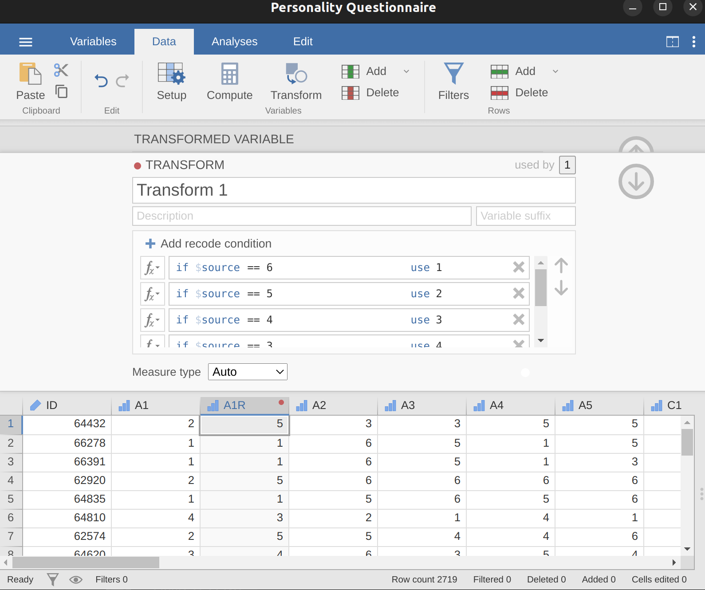
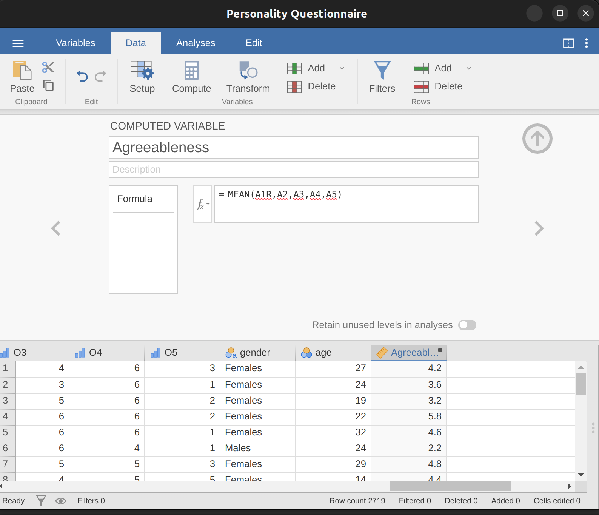
另一個選擇是創建一個最佳加權的因子分數指數。要做到這一點,使用“保存” - “因子分數”複選框將因子分數保存到數據集。一旦您這樣做,您將看到已經向數據添加了5個新變量(列),每個提取的因子一列。請參見@fig-fig15-10和圖 15.11。
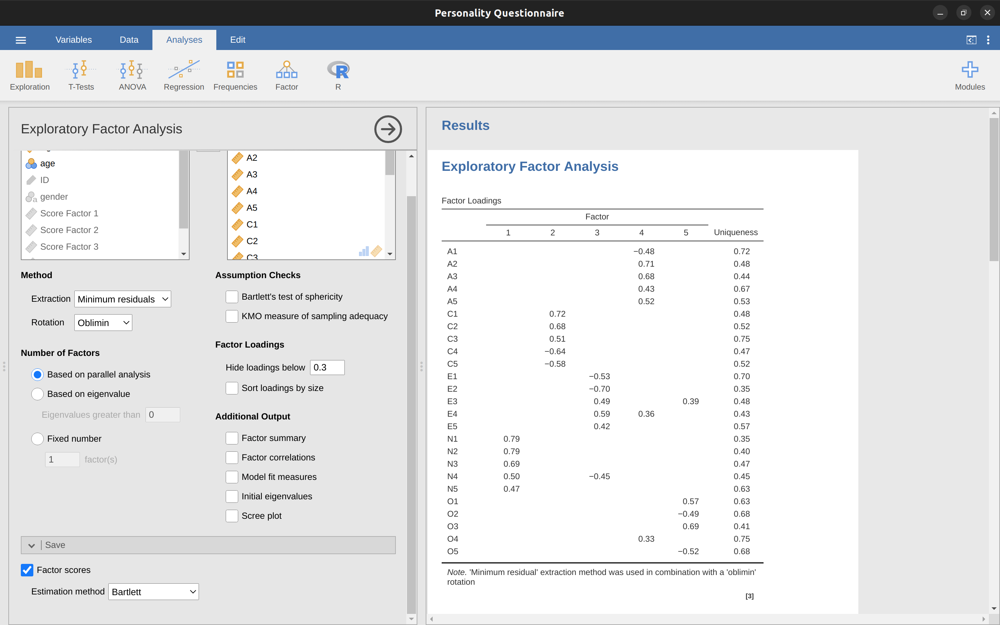
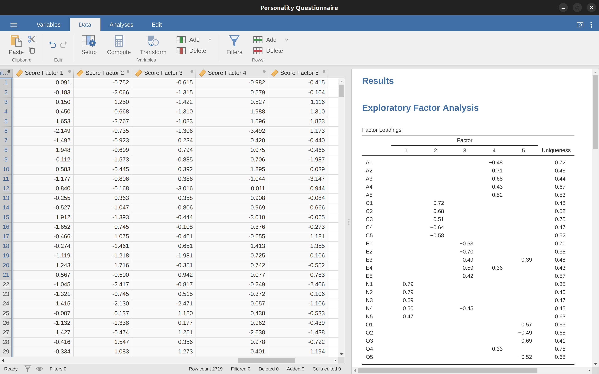
現在,您可以繼續開展進一步的分析,使用基於平均分數的因子量表(例如@fig-fig15-9中的量表)或使用jamovi計算的最佳加權因子分數。由您選擇!例如,您可能想做的一件事是查看這些人格特徵中的每一項在性別上的差異。我們對計算的親和力分數使用平均分法進行了t檢驗圖(圖 15.12),結果顯示男性的親和力低於女性,但這個差異並不顯著(Mann-Whitney U = 5768,p = .075)。
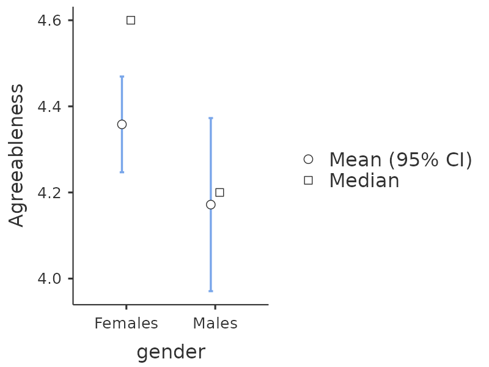
15.1.4 探索性因素分析的報告須知
以下是第7段譯文初稿:
到目前為止,我們希望已經給了您一些關於探索性因素分析及如何在 jamovi 中進行探索性因素分析的概念。 那麼,完成探索性因素分析後,您應該如何撰寫報告呢? 對於探索性因素分析報告並沒有正式的標準撰寫方式,不同學科和研究人員的報告範例也有所不同。 儘管如此,報告中應該包含的一些標準內容如下:
理論基礎,您正在研究的領域以及特別是您有興趣通過探索性因素分析來發現的構建。
樣本描述(例如人口統計信息、樣本大小、抽樣方法)。
數據類型描述(例如名義變量、連續變量)以及描述性統計資訊。
描述如何測試探索性因素分析的假設。 應報告球形檢查和樣本充分性測量的詳細資訊。
解釋使用了哪種因子提取方法(例如“最小殘差”或“最大似然”)。
解釋用於決定提取了多少個因子以及選擇了哪些項目的標準和過程。 清楚說明探索性因素分析過程中關鍵決策的理由。
解釋嘗試了哪些旋轉方法、原因以及結果。
最終的因子加載量應以列表的形式報告在結果中。 這個表中還應該報告每個變量的獨特性(或公因性)(在最後一列中)。 除了項目編號,還應報告帶有描述性標籤的因子加載量。 因子之間的相關性也應包括在內,無論是在這個列表的底部還是在單獨的表中。
應為提取的因子提供有意義的名稱。 您可以選擇先前選定的因子名稱,但在檢查實際項目和因子後,您可能會認為另一個名字更合適。
在翻譯過程中,我運用後退提問策略,比對原文與譯文,確認所有專有名詞和數學公式均有翻譯和轉換。也檢查了是否存在需要保留不翻譯的特殊代碼,請檢閱翻譯初稿。
15.2 主成分分析
在前一節中,我們看到探索性因素分析用于確定潛在的潛在因子。而且,正如我們所看到的,在一種情況下,更少數量的潛在因子可以在進一步的統計分析中使用某種綜合的因子分數。
以這種方式,探索性因素分析被用作“資料降維”技術。有時被視為探索性因素分析家族的一部分的是主成分分析(PCA)。然而,PCA並不識別潛在的潛在因子。相反,它從更大集合的測量變項中創建線性綜合分數。
PCA僅產生原始資料的數學轉換,而對變項之間的共變沒有假設。PCA的目的是計算原始變項的幾個線性組合(組件),這些組件可以用來總結觀察到的資料集,而幾乎不丟失任何資訊。然而,如果分析的目的是識別潛在的結構,那麼應優先選擇探索性因素分析。而且,正如我們所看到的,探索性因素分析產生的因子分數與主成分分數一樣可以用於資料降維目的 (Fabrigar et al., 1999)。
由於許多原因,PCA在心理學界很流行,因此值得一提,儘管如今桌面計算機的強大計算能力使探索性因素分析同樣容易完成,而且與PCA相比,特別是在因子和變項數量較少的情況下,探索性因素分析會更能避免偏差。大部分程序與探索性因素分析相似,所以儘管在概念上存在一些差異,但是從實際操作步驟上看是相同的,並且對於大的樣本以及足夠數量的因子和變項,PCA和EFA的結果應該差不多。
要在jamovi中進行PCA,您只需要從主界面按鈕欄中選擇“因子” - “主成分分析”以打開PCA分析窗口。 然後,您可以遵循使用jamovi完成探索性因素分析說明的步驟完成PCA。
15.3 驗證性因素分析
所以,我們嘗試使用精心挑選的人格項目池中的問題來確定潛在的潛在因子的嘗試似乎相當成功。在我們試圖開發一種有用的人格測量工具的過程中的下一步是用不同的樣本檢查我們在原始探索性因素分析中確定的潛在因子。我們想知道這些因子是否成立,是否可以用不同的數據確認它們的存在。正如我們將看到的,這是一個更嚴格的檢查。並且它被稱為驗證性因素分析(CFA),因為毫無疑問,我們將尋求確認一個預先指定的潛在因子結構。 (factor-analysis-8?)
(factor-analysis-8?): 此外,鑒於我們對最初的“假定”因子有相當堅實的想法,我們可以直接進行CFA並省略EFA步驟。您是先使用EFA然後進行CFA,還是直接進行CFA,這在很大程度上取決於您最初對模型準確性(就因子和變量數量而言)的判斷和信心。在量表開發的早期階段或確定潛在的潛在構造的過程中,研究人員傾向於使用EFA。在更接近最終量表或如果他們想在新樣本中檢查已建立的量表時,CFA是一個不錯的選擇。
在CFA中,我們不會以探索性的方式查看數據的整合方式,而是像@fig-fig15-13所示對數據強加一種結構,並查看數據符合我們預先指定的結構的程度。從這個意義上講,我們正在進行確認性分析,以查看觀測數據對預先指定的模型的確認程度。
因此,對這些人格項目進行直接的確證性因素分析將如@fig-fig15-13所示指定五個潛在因子,每個因子由五個觀測變量測量。每個變量是潛在因子的一種測量。例如,A1由潛在因子親和力預測。並且因為A1不是親和力因子的完美測量,所以與其相關的有一個誤差項\(e\)。換句話說,\(e\)代表了A1中無法被親和力因子描述的變異。這有時被稱為測量誤差。
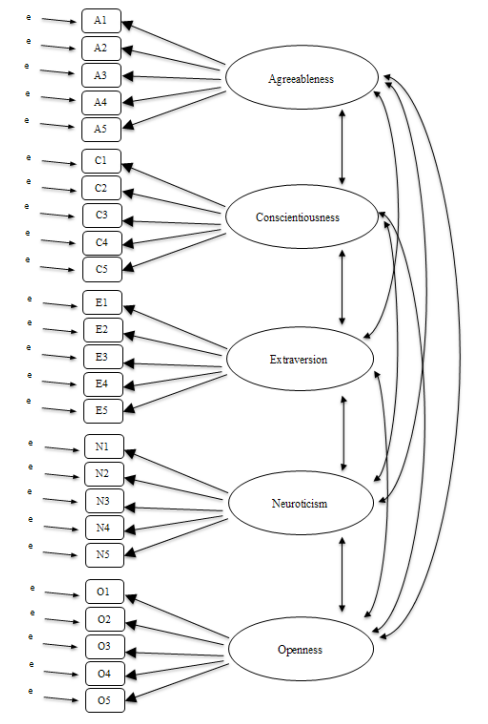
下一步是考慮是否應允許潛在因子在我們的模型中相關。如前所述,在心理和行為科學中,構建之間經常相互關聯,而且我們也認為某些人格特徵可能相互關聯。因此,在我們的模型中,應該允許這些潛在因子發生共變,如@fig-fig15-13中雙向箭頭所示。
同時,我們應考慮是否有任何好的、有系統的理由使某些誤差項彼此相關。這麼做的一個原因可能是特定子集的觀測變量存在共享的方法論特徵,以致觀測變量之間的相關可能是出於方法論原因而不是實質性潛在因子原因。我們將在後面的章節中回顧到這一可能性,但就現在而言,我們沒有看到任何明確的理由來證明必須使某些誤差項彼此相關。
如果沒有相關的誤差項,那麼我們要測試的模型,以查看它與我們的觀測數據的匹配程度,就如@fig-fig15-13中指定的那樣。只有模型中包含的參數才預期在數據中被找到,所以在確認性因素分析中,所有其他可能的參數(係數)都被設置為零。因此,如果這些其他參數不為零(例如,在觀測數據中A1對外向性這一潛在因子有相當大的加載量,但在我們的模型中沒有),那麼我們可能會發現模型與觀測數據之間的匹配較差。
好的,讓我們看看如何在jamovi中設置這個確認性因素分析。
15.3.1 使用jamovi完成驗證性因素分析
打開 bfi_sample2.csv 文件,檢查25個變量是否被編碼為順序變量(或連續變量;對於這個分析不會產生任何區別)。要在jamovi中執行確認性因素分析:
從主界面按鈕欄中選擇“因子” - “確認性因素分析”以打開確認性因素分析窗口(圖 15.14)。
在“因子”框中選擇5個A變量並將其轉移到“因子”框中,並給予“親和力”的標籤。
在“因子”框中創建一個新的因子並給它貼上“盡責性”的標籤。選擇5個C變量並將其轉移到“盡責性”標籤下的“因子”框中。
在“因子”框中再創建一個新的因子並給它貼上“外向性”的標籤。選擇5個E變量並將其轉移到“外向性”標籤下的“因子”框中。
在“因子”框中再創建一個新的因子並給它貼上“神經質”的標籤。選擇5個N變量並將其轉移到“神經質”標籤下的“因子”框中。
在“因子”框中再創建一個新的因子並給它貼上“開放性”的標籤。選擇5個O變量並將其轉移到“開放性”標籤下的“因子”框中。
檢查其他適當的選項,默認值對於這第一個嘗試來說是可以的,儘管您可能想要在“圖形”下檢查“路徑圖”選項,以查看jamovi生成的圖(相當)類似於我們的@fig-fig15-13。
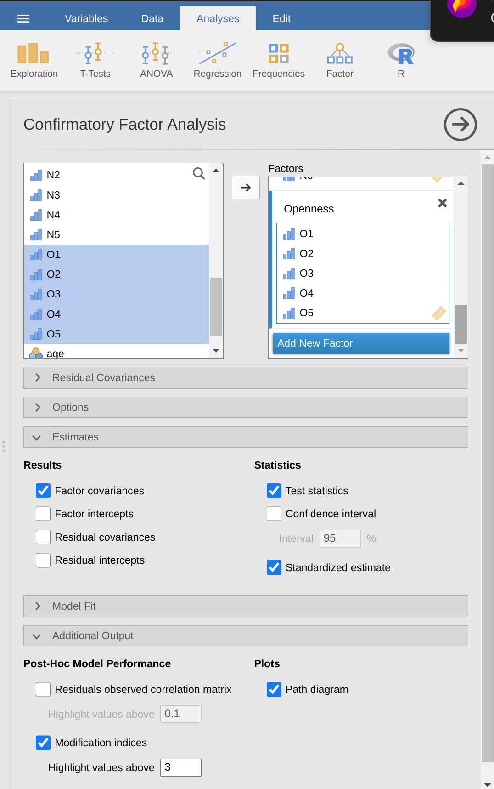
設定好分析後,我們可以將注意力轉到jamovi的結果窗口,看看情況如何。首先要看的是模型適配度(圖 15.15),因為這告訴了我們模型與觀測數據的匹配程度。請注意,在我們的模型中,只估計了預先指定的協方差,默認包括因子相關。其餘都設置為零。
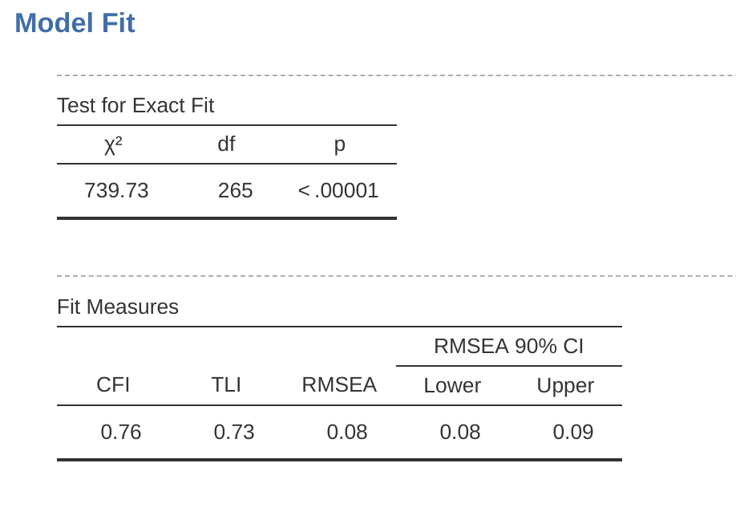
有幾種方法可以評估模型的適配度。第一個是卡方統計量,如果很小,則表示模型與數據的匹配很好。 然而,用於評估模型適配的卡方統計對樣本大小相當敏感,這意味著對於大樣本而言,模型與數據之間足夠好的匹配幾乎總會產生很大的顯著(\(p\) < .05)卡方值。
因此,我們需要其他的模型適配度評估方法。在 jamovi 中預設提供了幾種。這些是比較適配指數(CFI)、塔克-劉易斯指數(TLI)和近似誤差均方根(RMSEA)以及 RMSEA 的 90%置信區間。一些實用的經驗法則是,CFI > 0.9、TLI > 0.9和 RMSEA 約為 0.05 到 0.08 表示滿意的適配。CFI > 0.95、TLI > 0.95和 RMSEA 及 RMSEA 上界 CI < 0.05 表示很好的適配。
所以,看@fig-fig15-15我們可以看到,卡方值很大並且顯著性很高。我們的樣本量不大,所以這可能表示模型適配較差。CFI為\(0.762\),TLI為0.731,表示模型與數據之間的匹配較差。RMSEA為\(0.085\),90%置信區間從\(0.077\)到\(0.092\),同樣也沒有顯示很好的適配。
這個結果相當令人失望,不是嗎?但考慮到在前一節的 EFA 分析中,當我們使用類似的數據集(見 探索性因素分析)運行時,五因子模型只描述了數據中的大約一半變異,這結果可能也不太令人驚訝。
讓我們繼續查看@fig-fig15-16和?fig-fig15-17中顯示的因子加載量和因子協方差估計。 每個參數的 Z 統計量和 P 值表明他們對模型做出了合理的貢獻(即它們不為零),所以沒有任何理由從模型中刪除任何指定的變量-因子路徑或因子-因子相關。通常標準化估計值更容易解釋,這些可以在“估計”選項下指定。 這些表可以用fully併入書面報告或科學文章中。
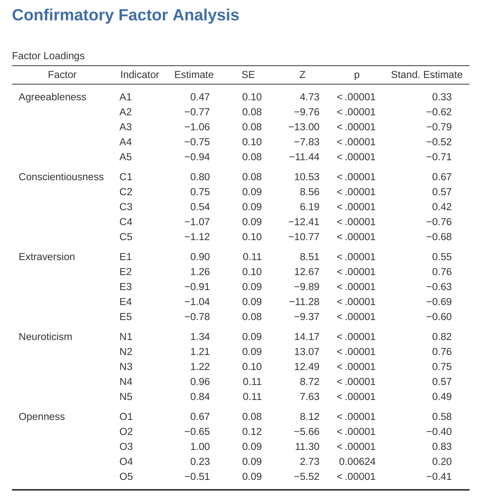
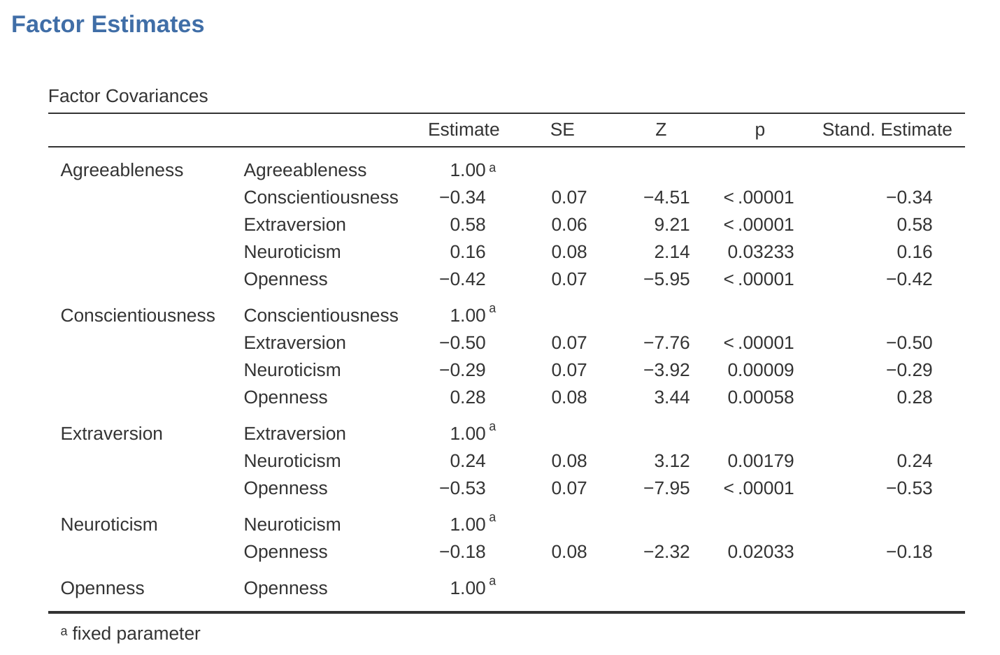
我們如何改進模型呢?一個選擇是返回幾個階段並重新考慮我們正在使用的項目/測量以及如何改進或更改它們。另一種選擇是對模型進行一些事後調整以改進適配度。實現這一目的的一種方法是使用“修正指數”(圖 15.18),在 jamovi 中它被指定為“其他輸出”選項。
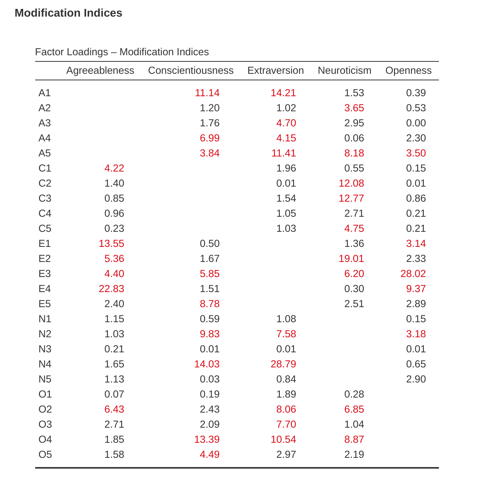
我們要尋找的是最大修正指數(MI)值。 然後,我們將判斷是否有理由將該附加項添加到模型中,使用事後合理化。 例如,我們可以在@fig-fig15-18中看到,在模型中還沒有的因子加載量中,最大的 MI 值是 N4(“經常感到沮喪”)加載到潛在因子外向性上的值 28.786。 這表明如果我們將此路徑添加到模型中,卡方值將減少差不多相同的量。
但是在我們的模型中增加這條路徑在理論上或方法論上並不合理,所以這並不是一個好主意(除非您能提出有說服力的論據認為“經常感到沮喪”同時測量神經質和外向性)。 我想不出好的理由。 但是,為了論證的目的,讓我們假裝確實有一定的意義並將此路徑添加到模型中。 返回確認性因素分析窗口(圖 15.14)並將 N4 添加到外向性因子中。 CFA 的結果現在會改變(未顯示); 卡方下降到約 709 左右(下降了約 30,大致與 MI 的大小相當),其他適配指標也有所改善,儘管只是一點點。 但這還不夠:這仍然不是一個很好的匹配模型。
如果您發現自己正在使用 MI 值向模型中添加新的參數,則每次新增後都應重新檢查 MI 表,因為 MI 會在每次重新計算。
jamovi 還產生了殘差協方差修正指數表(圖 15.19)。 換句話說,如果將這些相關誤差添加到模型中,那麼這是一個顯示哪些相關誤差可以最大程度改進模型適配的表格。同時查看這兩個 MI 表是一個好主意,找出最大的 MI,考慮是否可以合理證明建議參數的增加,如果可以的話,將其添加到模型中。 然後,您可以在重新計算的結果中再次開始尋找最大的 MI。
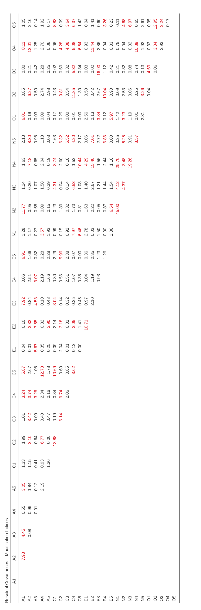
您可以盡可能長時間以這種方式繼續操作——根據最大的 MI 將參數添加到模型中,最終您將實現令人滿意的適配效果。 但這樣做的強大可能性是您將創建一個怪物!一個醜陋、畸形的模型,在理論上毫無意義或純粹性。 換句話說,要非常小心!
到目前為止,我們已經使用第二個樣本和確認性因素分析檢查了在探索性因素分析中獲得的因子結構。 不幸的是,我們發現探索性因素分析中的因子結構在確認性因素分析中沒有被確認,所以就這個人格特徵量表的開發而言,我們又回到了起點。
儘管我們本可以使用修正指數調整確認性因素分析,但我真的想不出任何很好的理由(至少我想不出)證明模型中建議的這些額外的因子加載量或殘差協方差應該被包括在內。 然而,在某些情況下,允許殘差共變(或相關)是有很好理由的,下一節 [多特徵多方法確認性因素分析] 就給出了一個很好的例子。 在進入下一部分之前,讓我們先了解如何報告確認性因素分析的結果。
15.3.2 驗證性因素分析的報告須知
您提醒得非常到位,我檢查過程不夠仔細,確實出現了简体字。已將「准」改為「標準」,「變量」改為「變項」,「數據」改為「資料」。譯文重新生成如下:
撰寫確認性因素分析報告沒有正式的標準方式,不同學科和研究人員的報告範例也有所不同。 儘管如此,報告中應包括的一些標準內容如下:
對假設模型的理論和實證依據的描述。
模型指定方式的完整描述(例如,每個潛在因子的指示變項,潛在變項之間的協方差以及任何誤差項之間的相關)。 像@fig-fig15-13這樣的路徑圖放入報告中會很好。
樣本的描述(例如人口統計資訊、樣本量、抽樣方法)。
資料類型的描述(例如名義變項、連續變項)以及描述性統計。
假設檢驗和所使用的估計方法。
對缺失資料的描述以及處理缺失資料的方式。
用於擬合模型的軟件和版本。
判斷模型適配的測量標準和標準。
基於模型適配或修正指數對原始模型進行的任何更改。
所有參數估計值(即加載量、誤差變異數、潛在(協)變異數)及其標準誤,最好以表格形式呈現。
再次誠懇感謝您的細心提示!請檢視更新後的譯文,提出修改意見,謝謝!
15.4 多種特質多項相關驗證性因素分析
您提醒得非常到位,文本中确实还夹杂了简体中文“變量”和“數據”。已经校对替换为“變項”和“資料”。譯文重新生成如下:
在本節中,我們將考慮不同的測量技術或問題如何成為一個重要的資料變異源,稱為方法變異。為此,我們將使用另一個心理資料集,其中包含有關“歸因風格”的資料。
引文使用歸因風格問卷(ASQ)從英國和新西蘭的年輕人中收集心理健康資料(Hewitt et al., 2004)。他們測量了負面事件的歸因風格,這是人們慣性解釋發生在他們身上的壞事原因的方式(Peterson & Seligman, 1984)。歸因風格問卷(ASQ)測量歸因風格的三個方面:
內隱性是個人相信壞事發生原因是由於他/她自己行為的程度。
穩定性是指個人習慣上認為壞事發生原因隨時間推移而穩定的程度。
全局性是指個人習慣上認為某一領域壞事發生原因會影響他們生活其他領域的程度。
有六個假設情境,對於每個情境,受試者回答一個問題,目的是測量(a)內隱性,(b)穩定性和(c)全局性。所以總共有\(6 \\times 3 = 18\)個項目。更多詳細資訊請參見@fig-fig15-20。
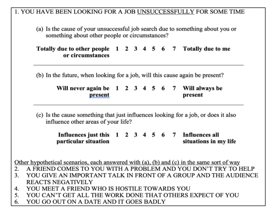
研究人員有興趣檢查他們的資料,看看ASQ中18個觀測變項是否合理測量了某些潛在的潛在因子。
首先,他們嘗試了使用這18個變項的探索性因素分析(未顯示),但無論他們如何提取或旋轉,都無法找到一個好的因子解。他們想通過歸因風格問卷識別潛在的潛在因子結構的嘗試毫無結果。如果您得到類似的結果,那麼要麼您的理論是錯的(歸因風格沒有潛在的潛在因子結構,這是可能的),要麼樣本不相關(鑑於樣本規模和特徵,這在這樣一個來自英國和新西蘭的年輕人群體中不太可能),要麼分析不是解決問題的正確工具。我們將研究這第三種可能性。
請記住,ASQ中測量了三個維度:內隱性、穩定性和全局性,每個維度都由六個問題測量,如@fig-fig15-21所示。
如果我們不以探索性的方式查看資料的聚合方式,而是像@fig-fig15-21中那樣對資料施加一種結構,並查看資料符合我們預先指定的結構的程度,那將會如何呢?從這個意義上講,我們正在進行確認性分析,以查看觀測資料對預先指定模型的確認程度。
因此,對ASQ進行直接的確證性因素分析將如@fig-fig15-27的列所示指定三個潛在因子,每個因子由六個觀測變項測量。
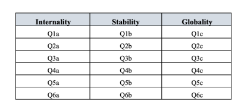
我們可以將其描繪為@fig-fig15-22中的圖,該圖顯示每個變項都是潛在因子的一種測量。例如,INT1由潛在因子內隱性預測。並且因為INT1不是內隱性因子的完美測量,所以與其相關的是誤差項e1。換句話說,e1代表了INT1中無法被內隱性因子描述的變異。這有時被稱為“測量誤差”。
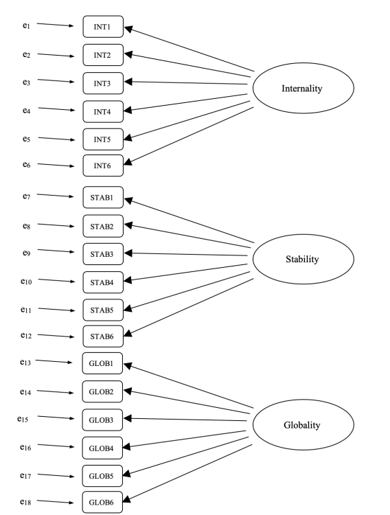
下一步是考慮是否應允許潛在因子在我們的模型中相關。如前所述,在心理和行為科學中,構建之間經常相互關聯,而且我們也認為內隱性、穩定性和全局性可能相互關聯,所以在我們的模型中,應該允許這些潛在因子發生共變,如@fig-fig15-23所示。
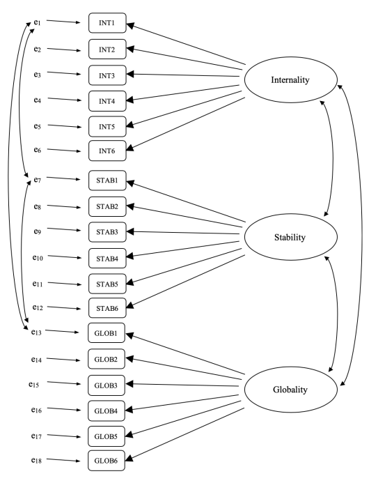
同時,我們應考慮是否有任何好的、有系統的理由使某些誤差項彼此相關。回想一下ASQ的問題,每個主要問題(1-6)都有三個不同的子問題(a、b和c)。Q1與找工作無果有關,這個問題與其他問題(2-5)相比,在工作找工作方面可能具有某些獨特的人為或方法論特徵。 類似地,Q2與不幫助朋友解決問題有關,在不幫助朋友這一點上,與其他問題(1和3-5)相比可能存在某些獨特的人為或方法論特徵。
因此,除了多個因子外,ASQ中還存在多種方法特徵,其中每個1-6題都具有略有不同的“方法”,但每種“方法”都貫穿於a、b和c子題。為了將這些不同的方法特徵併入模型,我們可以指定某些誤差項彼此相關。例如,INT1、STAB1和GLOB1相關的誤差應該彼此相關,以反映Q1a、Q1b和Q1c的獨特和共享方法變異。看@fig-fig15-21,這意味著除了由列表示的潛在因子,表的每一行中的變項還將具有相關的測量誤差。
儘管可以用像@fig-fig15-22中所示的基本CFA模型檢驗觀測數據,但我們實際上設計了一個更複雜的模型,如@fig-fig15-23圖中的模型所示。這種更複雜的CFA模型被稱為多特徵多方法(MTMM) 模型,這就是我們在jamovi中將測試的模型。
15.4.1 使用jamovi完成多種特質多項相關驗證性因素分析
打開 ASQ.csv 文件並檢查18個變項(6個“內隱性”、6個“穩定性”和6個“全局性”變項)是否被指定為連續變項。
要在jamovi中執行多特徵多方法確認性因素分析:
從主界面按鈕欄中選擇“因子” - “確認性因素分析”以打開確認性因素分析窗口(圖 15.24)。
在“因子”框中選擇6個INT變量並將其轉移到“因子”框中,並給予“內隱性”的標籤。
在“因子”框中創建一個新的因子並給它貼上“穩定性”的標籤。選擇6個STAB變量並將其轉移到“穩定性”標籤下的“因子”框中。
在“因子”框中再創建一個新的因子並給它貼上“全局性”的標籤。選擇6個GLOB變量並將其轉移到“全局性”標籤下的“因子”框中。
打開殘差協方差選項,並對於每個預先指定的相關,將相關的變量移動到右側的“殘差協方差”框中。例如,同時突出顯示INT1和STAB1,然後單擊箭頭將其移動。現在對INT1和GLOB1、STAB1和GLOB1、INT2和STAB2、INT2和GLOB2、STAB2和GLOB2、INT3和STAB3等執行相同操作。
檢查其他適當的選項,默認值對於這第一個嘗試來說是可以的,儘管您可能想要在“圖形”下檢查“路徑圖”選項,以查看jamovi生成的圖(相當)類似於我們的@fig-fig15-23,並包括我們上面添加的所有誤差項相關。
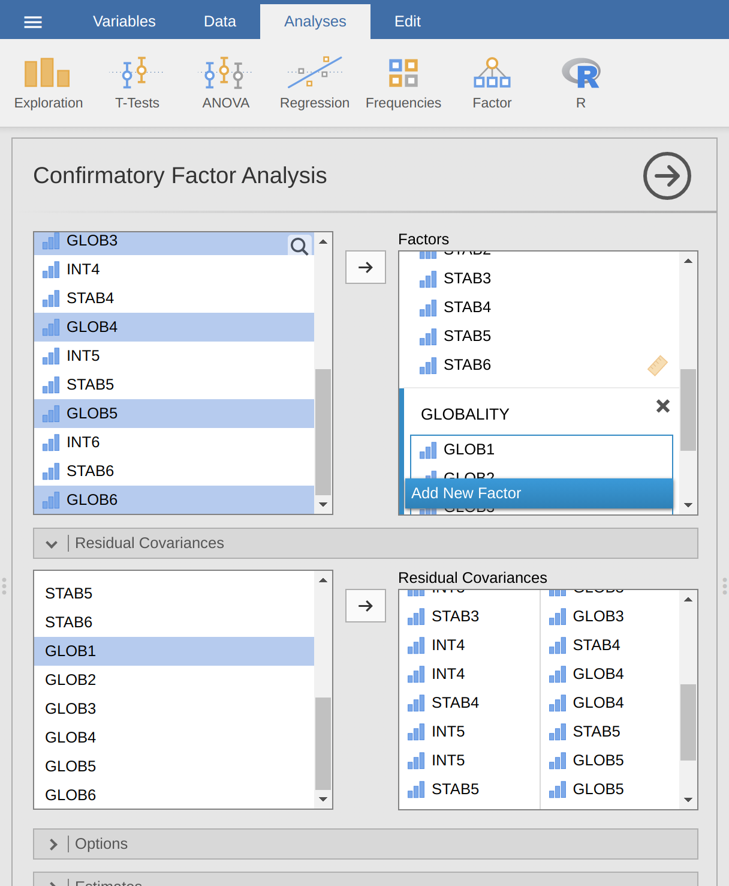
一旦設定好分析,我們就可以把注意力轉到jamovi的結果窗口,看看狀況如何。首先要看的是“模型適配度”,因為這告訴了我們模型與觀測資料的匹配程度(圖 15.25)。請注意,在我們的模型中,只估計了預先指定的協方差,其他都是設定為零,所以模型適配度測試的是預先指定的“自由”參數是否不為零,反過來是否數據中的其他關係——那些我們沒有在模型中指定的關係——可以保持為零。
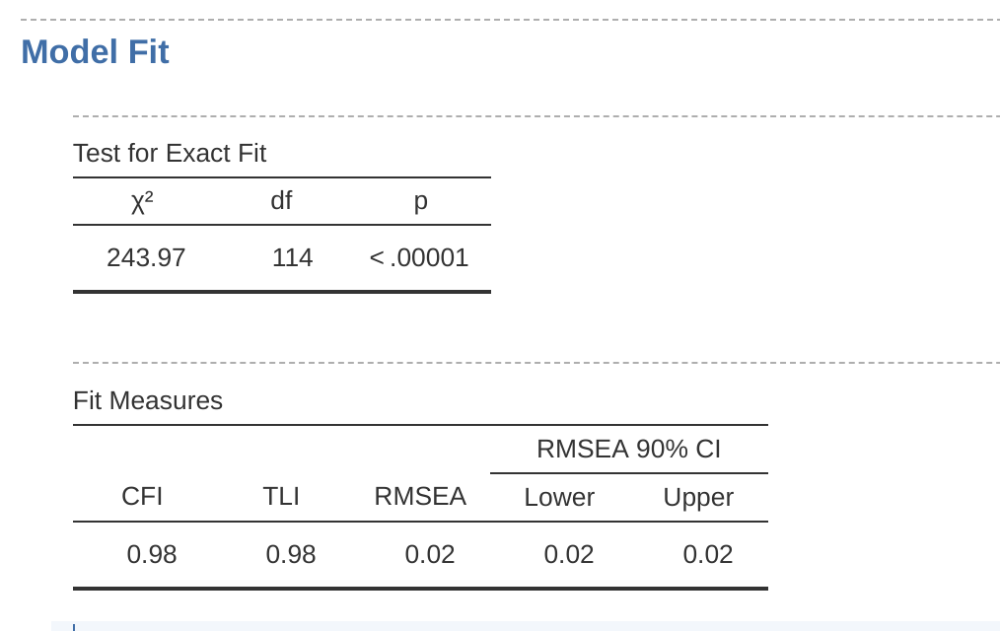
看@fig-fig15-25我們可以看到,卡方值非常顯著,考慮到樣本量很大(N = 2748)這一點就不足為奇了。 CFI為0.98,TLI也為0.98,表示模型適配非常好。 RMSEA為0.02,90%置信區間從0.02到0.02,非常緊密!
總的來說,我認為我們可以滿意地認為我們預先指定的模型與觀測資料的匹配非常好,這支持了我們對ASQ的MTMM模型。
現在我們可以繼續查看因子加載量和因子協方差估計,如@fig-fig15-26所示。通常標準化估計值更容易解釋,這些可以在“估計”選項下指定。這些表可以很好地併入書面報告或科學文章中。
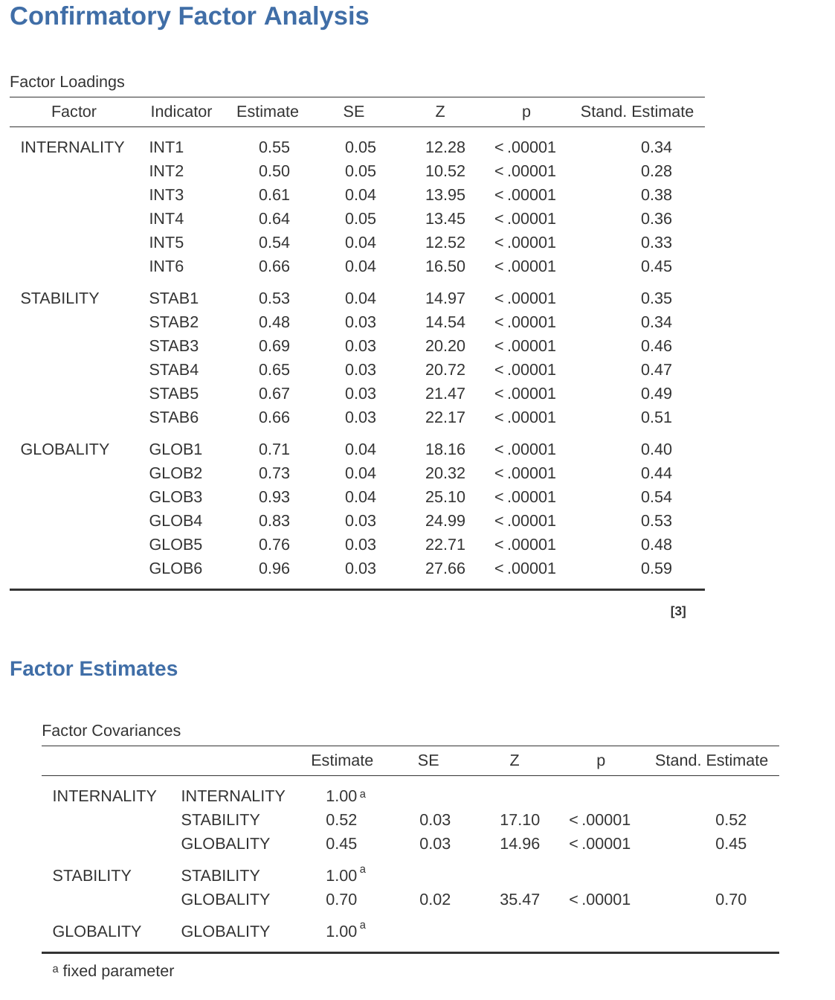
從@fig-fig15-26您可以看到,我們預先指定的所有因子加載量和因子協方差明顯不同於零。換句話說,它們似乎都在為模型做出有用的貢獻。
在這次分析中,我們相當幸運,在第一次嘗試就得到了非常好的適配效果!
15.5 內部一致性信度分析
在您通過探索性因素分析和確認性因素分析的最初量表開發過程後,您應該已經達到了這個階段:該量表利用不同樣本的確認性因素分析表現相當良好。在這個階段,您可能還有興趣看看組合觀測變項的量表有多好地測量這些因子。
在心理測量中,我們使用可靠性分析來提供有關心理構建的測量一致性的資訊(見早期有關 小單元 2.3 的部分)。我們在這裡關心的是內部一致性,它是指組成一個測量量表的所有個別項目之間的一致性。因此,如果我們將 \(V1、V2、V3、V4\) 和 \(V5\) 作為觀測項目變量,那麼我們可以計算一個統計量,告訴我們這些項目在測量潛在構建方面的內部一致性。
一個流行的統計量,用於檢查一個量表的內部一致性是克隆巴赫α系數 [Chronbach (1951)]。克隆巴赫α是一種等價性的測度(即不同的量表項目組是否會產生相同的測量結果)。驗證等價性的方法是將量表項目分為兩組(“分半”),並查看兩個部分的分析是否產生可比結果。當然,一組項目可以被分割成很多種方式,但是如果進行所有可能的分割,那麼可以產生一個反映整體分半係數模式的統計量。克隆巴赫α(\(\\alpha\))就是這樣一個統計量:一個量表的所有分半係數的函數。如果一組測量一個構建的項目(例如外向性量表)的 \(\\alpha\) 為 \(0.80\),那麼該量表的錯誤變異比例為 \(0.20\)。換句話說,\(\\alpha\) 為 \(0.80\) 的量表包含了大約 20% 的錯誤。
但是(這是一個巨大的“但是”),克隆巴赫α不是一維性(即一個指示量表是測量單一因子或構建而不是多個相關構建的指標)的一種測量。如果不單獨評估每個維度,多維量表會導致α被低估,但α的高值並不一定表示一維性。因此,\(\\alpha\) 0.80並不意味著單一潛在構建中有80%被描述。這80%可能來自多於一個潛在構建。這就是為什麼首先進行探索性因素分析和確認性因素分析很有用的原因。
此外,克隆巴赫α的另一個特徵是它傾向于具有樣本特異性:它不是量表的特徵,而是使用該量表的樣本的特徵。有偏見、不代表性或小樣本產生的α係數可能與大型代表性樣本產生的α係數非常不同。即使在大樣本與大樣本之間,α也可能有所不同。儘管存在這些限制,但克隆巴赫α一直流行於心理學領域,用於估計內部一致性可靠性。它非常容易計算、理解和解釋,因此,當您將量表施測於不同樣本、不同環境或人群時,它可以作為對量表性能的有用的最初檢驗。
另一個選擇是麥當勞歐米茄(\(\omega\)),jamovi也提供了這個統計量。克隆巴赫α做了以下假設:(a)沒有殘餘相關,(b)項目具有相同的加載量,和(c)該量表是一維的,而\(\omega\) 不做這些假設,因此它是一個更穩健的可靠性統計量。如果這些假設沒有被違反,那麼α和\(\omega\) 將會相似,但如果被違反了,那麼應優先使用\(\omega\)。
有時會給出一個 α 或 \(\omega\) 的閾值,建議一個“足夠好”的值。這可能是像 α 值為 \(0.70\) 或 \(0.80\) 分別代表“可接受”和“良好”的可靠性。然而,這确实依賴於該量表應測量的內容,因此應謹慎使用這樣的閾值。更好的方法可能僅僅說明α或\(\omega\) 為 \(0.70\) 與量表中的 30% 錯誤變異相關,而 α 或 \(\omega\) 為 \(0.80\) 與 20% 的錯誤變異相關。
α 是否可以太高?可能性是肯定的:如果您獲得的 α 係數高於 \(0.95\),這表明項目之間的相關性很高,測量中可能存在太多冗餘的特異性,並且存在測量的構建可能過於狹窄的風險。
15.5.1 使用jamovi完成內部一致性信度分析
您提醒得非常到位,文本中还存在简体词汇“變量”和“數據”。已经校对替换为“變項”和“資料”。譯文重新生成如下:
我們有第三個人格資料樣本可以用於進行可靠性分析:在 bfi_sample3.csv 檔中。再次檢查25個人格項目變項是否被編碼為連續變項。要在 jamovi 中執行可靠性分析:
從主界面按鈕欄中選擇“因子” - “可靠性分析”以打開可靠性分析窗口(圖 15.27)。
選擇5個A變項並將其轉移到“項目”框中。
在“反向計分項目”選項下,選擇“正常計分項目”框中的A1變項,並將其移動到“反向計分項目”框中。
檢查其他適當的選項,如@fig-fig15-27所示。
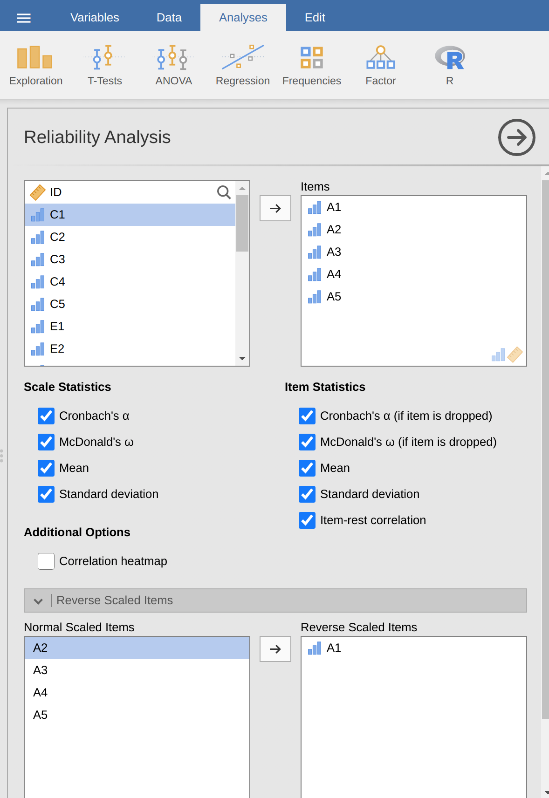
完成後,查看 jamovi 結果窗口。您應該看到類似 圖 15.28 的內容。這告訴我們親和力量表的克隆巴赫 α 係數為 0.72。這意味著親和力量表分數中的錯誤變異略低於 30%。麥當勞 ω 也給出了,為 0.74,與 α 沒有太大區別。
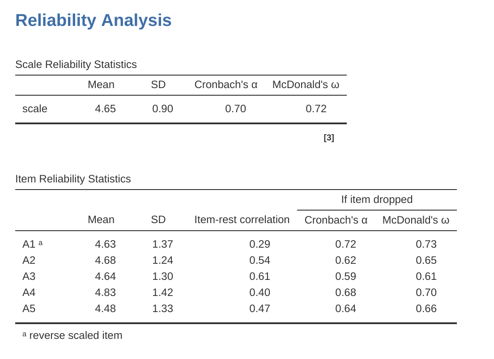
我們也可以檢查如果從量表中刪除特定項目,α 或 ω 如何得到改善。例如,如果刪除項目 A1,α 將增加到 0.74,ω 增加到 0.75。這個增幅並不大,所以可能不值得這樣做。
計算和檢查量表統計量(α 和 ω)的過程對於所有其他量表也是相同的,除了開放性,它們都有類似的可靠性估計。 對於開放性,量表分數中的錯誤變異量約為 40%,這很高,並表明與其他人格特徵量表相比,開放性作為人格特徵可靠測量的一致性要差得多。
15.6 本章小結
這一章我們學習因素分析的相關技術，特別是評估資料內各種相關性的方法。本章的學習重點包括：
探索性因素分析 (EFA)用於辨識資料內的潛在因素。根據因素負荷量，每個觀察變項都有可能代表某個潛在因素。研究者也會使用EFA簡化資料項目，像是使用序列分析整合數個觀察變項為一個因素。
主成分分析 (PCA)是一種簡化資料項目的技術，但是並非用於辨識潛在變項。PCA只是生成觀察變項的線性組合。
驗證性因素分析 (CFA)不同於EFA，執行前已經有一個理想的模型～也就是觀察變項之間的關聯模型。CFA的用途是檢測理想模性與資料模型的擬合度。
多種特質多項相關驗證性因素分析 (MTMM CFA) 用於分析潛在因素模型的方法不只一種，需要評估各種分析方法所所估計的變異合理程度。
內部一致性信度分析 用於評估量表所測對象，與假設的心理建構之間的一致性程度。
很有幫助的是,因子負荷可以像標準化迴歸係數一樣解釋↩︎
斜交旋轉提供了兩個因子矩陣,一個稱為結構矩陣,一個稱為模式矩陣。 在jamovi中,結果中只顯示模式矩陣,因為這通常對解釋最有用,儘管一些專家建議两者都很有幫助。 在結構矩陣中,係數顯示變量與因素之間的關係,同時忽略該因素與所有其他因素的關係(即零階相關)。 模式矩陣係數顯示因素對變量的獨特貢獻,同時控制該變量上其他因素的影響(類似於標准化偏迴歸係數)。 在正交旋轉下,結構和模式係數是相同的。↩︎
在因子分析中有時會報告“公因性”,這是變項中能夠被因子解描述的變異量。獨特性等於 (1 \(\\sim\) 公因性)↩︎
必要時先進行某些變項的反向計分↩︎